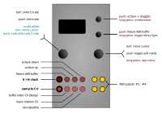

CopierMaschine

Inputs and outputs
| I/O | Function |
|---|---|
| TR1 | Clock input |
| TR2 | Hold ( = freeze ring buffer) |
| TR3 | Transpose: Octave up, when high |
| TR4 | Transpose: Octave down, when high (overridden by TR3) |
| CV1 | Sample in |
| CV2 | Index: ring buffer index (= “delay”) |
| CV3 | Mask: rotate scale mask |
| CV4 | assignable: octave, root, transpose (by scale-degrees), buffer-length, or CV input scaling |
| A, B, C, D | ASR outputs 1-4 |
Controls
| Control | Function |
|---|---|
| Left encoder (turn) | Select scale in main menu; move cursor in scale edit menu |
| Left encoder (press) | Activate scale in main menu; add/remove note in scale edit menu |
| Right encoder (turn) | Navigation mode: move up and down through the menu items. Edit mode: increase or decrease the value being edited; move scale “mask” in scale edit menu |
| Right encoder (press) | Toggle between menu navigation (selection) mode and value editing mode |
| Right encoder (long press) | App selection menu |
| Up button | toggle octave up |
| Up button (long press) | screensaver shortcut |
| Down button | freeze ASR input buffer |
| Down button (long press) | toggle delay type: multiplying / basic |
Available settings
| Setting | Meaning |
|---|---|
scale |
Current scale (active scale labelled with a little dot) |
root |
Root note for scale |
mask |
“scale mask” / active note pattern in the selected scale |
octave |
octave |
buf. index |
ring buffer index (= “delay”) amount |
hold (buflen) |
length of buffer (when freezing the ASR): 4 - 63 |
trigger delay |
sets the TR1-input-to-processing latency (for details see Quantermain below) |
input gain |
CV “gain”, multiplies incoming CV1 sample value by selected value (range: 0.05 - 2.00 in steps of 0.05). Note that this setting also affects the range of the ‘internal’ CV sources (LFSR, bytebeats and integer sequences, see below). |
CV4 dest. --> |
parameter assigned to CV4 input |
CV source |
sets the source of the sample voltage, either an external voltage (CV1), or an ‘internal’ source (details see below) |
This app works much the same as the original o_C / quantising ASR firmware, except that it now incorporates some of the new/improved quantiser features, including a larger selection of (editable) preset scales as well as advanced user-scale-edit and (non-1V/oct) tuning options (for details, see the Quantermain “app” below and the info re: custom scales/tunings above).
In essence, then, ASR mode works as a cascaded, four-stage sample-and-hold module (see here for an exposition on the classic ASR implementation):
- Feed a pulse (clock, trigger) into the left-most digital input (TR1), and a CV signal (LFO, ADSR, etc) into the leftmost CV input (CV1): on receiving a/the clock, the DAC outputs will be updated, ASR-style: the sampled value will be present at output A, the previous sample values shifted down the remaining outputs B, C, and D.
-
The ASR mode features additional parameters, including
- a delay (= controlled via the
buf. indexparameter (CV2)) - scale ‘mask’ rotation (CV3)
- hold (which “freezes” the sample buffer) (TR2, down button)
- CV over transposition, scale mask rotation, root, buffer size (assignable via CV4)
- a delay (= controlled via the
-
Please also see the discussion of the
Trigger delaymenu selection in the Quantermain app documentation below — the same considerations apply to thetrigger delaysetting in CopierMaschine.
buffer index (delay)
-
The
indexparameter works as a delay, sort of: internally, the ASR is a ring-buffer (buffer size = 256), and (to simplify things) by default outputs the sampled values S[x] stored at the buffer locations index * output-stage, ie A = S[i * 1], B = S[i * 2], C = S[i * 3], and D = S[i * 4]. -
The default index setting (
buf. index) is 0 (internally i = 1), in which case things boil down to standard ASR behaviour:A = S[1], B = S[2], C = S[3], and D = S[4]
-
If the index parameter was instead set to, say, i = 8, the ASR in that case would output the values stored in the buffer at locations S[8], S[16], S[24], and S[32], thus delaying output A by 8 clocks, B by 16 clocks, and so on. Thus, modulating the
indexparameter doesn’t just delay the output on channels B to D, but also allows different patterns to be created (based on the contents of the buffer). -
Alternatively, you can change the way the delay behaves by long-pressing the down-button once. (Two little dots will appear next to the clock indicator at the top of the menu, on the right). In this case, the value of
buf. indexwill simply be added to the buffer locations, ie A = S[1 + i], B = S[2 + i], C = S[3 + i], and D = S[4 + i]. The resulting behaviour is that of a regular delay line. Another long-press on the down button will toggle back to the firstindexmode.
hold (‘freeze’)
-
Pressing the down button will toggle ‘freeze’ mode. Freeze mode is also activated while the TR2 (= hold) input is held high (using a gate or the like). In freeze mode, no further samples will be acquired; when clocked, the four outputs then simply cycle through what’s already the buffer. If ‘freeze’ is engaged, two little dots will appear next to the scale name, at the top of the menu, indicating the buffer is currently frozen.
-
The size of the hold buffer is determined by the
hold (buflen)parameter, which goes from 4 to 63. While the buffer is ‘frozen’, all the various modulation options (buffer length, transposition, scale change, etc) are still available / operate on the frozen buffer contents. -
‘Freeze’ mode effectively turns CopierMaschine into a clocked, quantised CV recorder, with four output taps and variable playback parameters.
Inputs and outputs
Scale edit:
see here (user-scales are shared across apps).
Screensaver display
Four little “Arabesque” patterns, representing the pitch CV output on each of the four channels.
CV sources
Four settings of the CV source parameter are available:
CV1— voltages on the CV1 input are quantised, according to thescaleandActive notessettings.LFSR— “Linear Feedback Shift register” (also referred to as a “Turing Machine” or “TM” elsewhere in this documentation). This is the same as theTuringsource in the Quantermain app - please see the discussion of the Turing Machine source in the Quantermain section for further details of operation. The available settings for the Turing Machine source in CopierMaschine are shown in the table below.ByteB— “bytebeat” equations used to generate semi-fractal note values, rather than audio signals (which is what byte beat equations are usually used for). Please see the Viznutcracker, sweet! app for details of the byte beat equations available.IntSq— integer sequences - several classes of random and fractal integer sequences, used as note values.
LFSR source settings in CopierMaschine
Note: LFSR is used equivalently to “Turing Machine” here. (see Quantermain for details).
| Setting | Meaning |
|---|---|
LFSR length |
Length of the linear feedback shift register, in bits, range 4 to 32 |
LFSR p |
Probability that the least significant bit will be flipped when it to copied, range 0 to 255 (0 means p= 0, 255 means p= 1) |
LFSR CV1 |
The Turing Machine parameter to which any voltage input on CV1 will be directed. Choices are rng, len and p (ie, range, length, and probability) |
Note that the LFSR range setting in previous versions has been subsumed by the input gain setting, which now also affects the ‘internal’ CV sources such as LFSR, bytebeats and integer sequences. |
Byte beats source settings in CopierMaschine
| Setting | Meaning |
|---|---|
BB eqn |
sets the byte beat equation used as the source. See the Viznutcracker, sweet! app documentation for more details of the currently available equations. |
BB P0 |
Parameter 0 for the byte beat equation - see See the Viznutcracker, sweet! app documentation for more details. |
BB P1 |
Parameter 1 for the byte beat equation - see See the Viznutcracker, sweet! app documentation for more details. |
BB P2 |
Parameter 2 for the byte beat equation - see See the Viznutcracker, sweet! app documentation for more details. |
BB CV1 |
The byte beat parameter to which the input on CV1 is directed. Possible destinations are “igain” (input gain), “eqn” (equation), “P0”, “P1”, “P2”. See LFSR CV1 above for details of input voltage ranges. |
Note that compared to the bytebeat source in Quantermain, the Bytebeat range parameter is missing from CopierMaschine. The reason is that the input gain setting has the same effect in CopierMaschine when the ByteB source is used as the Bytebeat range setting does in Quantermain.
Integer sequence source settings in CopierMaschine
| Setting | Meaning |
|---|---|
IntSeq |
sets the integer sequence used as the source. See below for a list of available integer sequences and their characteristics. |
IntSeq modul |
sets the modulus for the integer sequence. The value of the integer from the integer sequence is divided by the modulus and the remainder is used. For example, if the modulus is 8 and the current integer value from the sequence is 19, then the remainder of 19 - (2 x 8) i.e. 3 is used as the value. In other words, values “wrap around” at the modulus setting — it sets a maximum note range for the integer sequence, similarly to the M/A setting, but M/A compresses of expands the range of notes for a given integer value from the sequence, whereas the modulus wraps the values around. |
IntSeq start |
sets the start point in the stored integer sequence. The stored sequences are 128 steps long, and the maximum start point is 126 to ensure a minimum sequence length of 2. |
IntSeq len |
sets the length of the integer sequence. Thus a length of 16 will use just 16 values from the stored 128 step sequence, starting at the step specified by IntSeq start. |
IntSeq dir |
sets whether the integer sequence loops back to the beginning when it gets to the end, or whether it swings back like a pendulum and plays in reverse when it reaches the end. The “end” is the last step in the sequence, as defined by the sequence start plus the sequence length settings. |
Fractal stride |
Several of the sequences are fractal or semi-fractal in nature (i.e. they are self-similar), and the “stride” setting sets how many steps are advanced on each trigger input. This also works well with the non-fractal sequences and provides additional variation, particularly if the stride is not an exact divisor of the sequence length. |
IntSeq CV1 |
The integer sequence parameter to which the input on CV1 is directed. Possible destinations are (parameter names in brackets): M/A (mult/att), seq (IntSeq), strt (IntSeq start), len (IntSeq len), strd (Fractal stride) and mod (IntSeq modul). See LFSR CV1 above for details of input voltage ranges. |
Integer sequences available in CopierMaschine and Quantermain
| Menu name | Description |
|---|---|
pi |
The first 128 digits of π |
vnEck |
The first 128 integers in van Eck’s sequence. |
ssdn |
The first 128 integers in the sequence of the sum of squares of the digits of n. |
Dress |
Dress’s sequence. |
PNinf |
Per Nørgård’s infinity series |
Dsum |
Digital sum (i.e. sum of digits) of n; also called digsum(n). |
Dsum4 |
Digital sum (i.e. sum of digits) of n written in base 4. |
Dsum5 |
Digital sum (i.e. sum of digits) of n written in base 5. |
CDn2 |
Fractal sequence: count down by 2’s from successive integers. |
Frcti |
Fractal sequence of the interspersion A163253. |
See the acknowledgements section for additional references for some of these integer sequences.
Note that there isn’t really anything magical or mystical about the digits of transcendental numbers such as π — they are just a convenient source of sequences of digits. However, if you use them to make music, then you can post videos like this, or this. The fractal and semi-fractal sequences can produce some magical melodies, however.